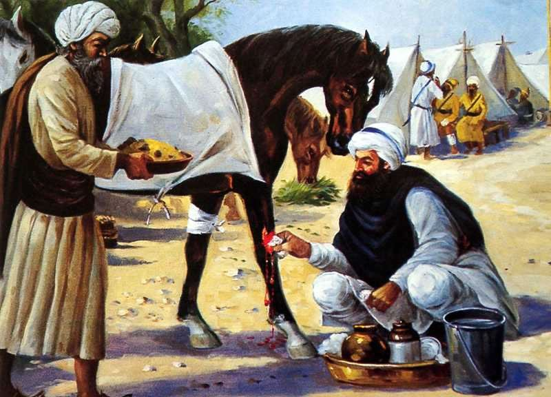

Baba Tara Singh's valiant last stand

Now my dear enlightened, wise Gursikh readers,
Listen to the episode of Tara Singh (the great Sikh martyr).
He belonged to a village known as Dal Wan ,
Which had a majority of Buttar Jat Sikh residents.Leading a morally upright, clean and
highly disciplined life, He donned the Khalsa’s blue robes and battle ready armour.
Reposing his full faith in Gurbani and the Sikh Gurus,
He always kept his word as that kept by a Sati3 .
Deserving to be placed at the top among the fearless/fighters,He would even fight for a
cause that concerned others. Being ever ready for a fight (for a cause),
He never hesitated from sacrificing his life.
Being ready to pick up a fight on the slightest pretext,
Such was the stuff that he was made of.
When Banda Singh Bahadur was alive (and powerful),
He had defeated all the ruling Mughal forces.
The Mughals then kept the Singhs in good humour,
In order to remain in power in the whole country.
They maintained good cordial relations with the Singhs,
In order to tide over the emergent moment of crisis,
But once they had eliminated Banda Singh Bahadur,
They killed (many) Singhs without any offence. The Mughals had made Tara Singh a
custodian over an area,
Where this brave warrior had raised a small mansion.
Tara Singh, taking no notice of the changed times,
Continued with his same violent, aggressive stance.
Refusing to budge from his earlier violent behaviour,
He kept indulging in acts of violence and rioting.
Picking up a fight even for the stranger’s cause,
He kept on commanding a small battery of violent fighters.
Whosoever approached him with any kind of complaint,
He would eagerly take upon himself to redress that issue.
Having no fear of being killed in any violent encounter,
He kept on indulging in violent acts compulsively.
Even if a contentious issue concerned others unknown to him,
He would get himself involved unnecessarily into it.
Having become such a compulsive addict to violence,
He refused to abide by the Mughal’s sovereign write.
He boasted that he would never desist from fight,
Since fighting was systemically built in the Khalsa’s body.
They had been ordained to be violent (for a cause),
By the express Will of the great Guru (Guru Gogind Singh).
(The Khalsa) would attain sovereignty through fighting,
And fight alone would prod them to make sacrifices.
Since nobody bothered about their cause without violence,
They would indulge in violence myriad times.